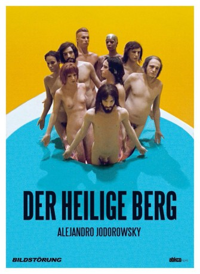

#4490 Montana Sacra - Der heilige Berg
Alternativ: The Holy Mountain (Englischer Titel)
 gesehen am 27.09.2016
gesehen am 27.09.2016
 
 IMDB-Wertung: 7.9 / 10
IMDB-Wertung: 7.9 / 10  Metascore: 0
Metascore: 0 
Experimentalfilm des chilenischen Regisseurs Alejandro Jodorowsky aus dem Jahre 1973, der Kultstatus gewonnen hat. Das metaphysische Drama beschäftigt sich mit Religion und Gewalt - der Regisseur übernimmt die Hauptrolle des Alchimisten in diesem Werk, das von John Lennon bis Marilyn Manson viele Anhänger fand.
Jahr: 1973
Dauer: 116 Minuten
FSK: 18
Land: Mexiko Studio: Constantin FilmTonspuren: DD2.0 - ,
Untertitel: Deutsch,
Auflösung: 720p (1280x544) Größe: 6410 MB
Genre: Abenteuer, Drama, Fantasy
Regisseur: Alejandro Jodorowsky
Drehbuch: Kacey Arnold
Soundtrack:
Darsteller:
- Alejandro Jodorowsky als The Alchemist
- Ana De Sade als The Prostitute
- Jacqueline Voltaire als Tourist Wife
- Marcela López Rey als Prostitute , uncredited
- Horacio Salinas als The Thief
- Zamira Saunders als The Written Woman
- Juan Ferrara als Fon
- Adriana Page als Isla
- Burt Kleiner als Klen
- Valerie Jodorowsky als Sel
- Nicky Nichols als Berg
- Richard Rutowski als Axon
- Luis Lomelí als Lut
- Chucho-Chucho als The Chimpanzee
- Letícia Robles als Bald Woman 1
- Connie De La Mora als Bald Woman 2
- David Kapralik als Tourist
- Pablo Leder als Circus Barker
- Bobby Cameron als Fon's Working Girl
- Re Debris als Klen's Lover
- Lupita Peruyero als Berg's Wife
- José Antonio Alcaraz als Pantheon's Bar Owner
- Héctor Ortega als Drug Master
- Robert Taicher als Poet
- Harry Cohn als Klen's Chauffeur , uncredited
- Manuel Dondé als Wanderer , uncredited
- Ramiro Chávez Gochicoa als Boy , uncredited
- Basilio González als Crippled man , uncredited
- Jane Mitchell als Stripteaser , uncredited
- Marcela Ponzarelli als Woman at the church , uncredited
- David Silva als Fon's father , uncredited
Datei: X:\FSK18-1900-1999\Montana Sacra - Der heilige Berg (1973, FSK18, 1280x544).mkv seit 26.09.2016
Festplatte: FSK18
 Es gibt insgesamt 108 Filme in der Gruppe 'FSK18-1900-1999'
Es gibt insgesamt 108 Filme in der Gruppe 'FSK18-1900-1999'